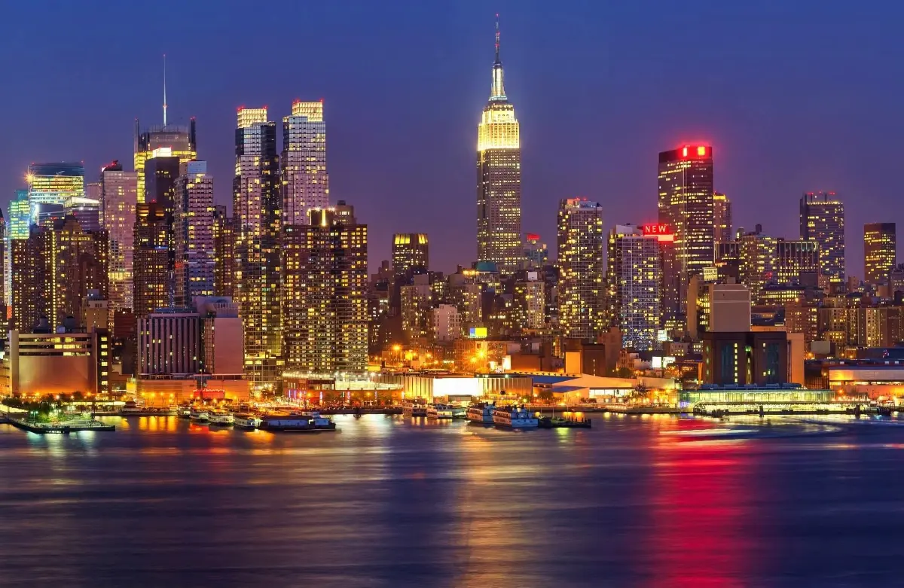

Halloween in New York
Halloween is the one night New York takes dressing up seriously. The Village Halloween Parade is the centrepiece — a free evening procession through Greenwich Village — and the rest of the city spends the weekend in costume, in bars and at parties that sell out well ahead.
Checked 2 November 2026. Prices, opening hours and transport details were verified against official sources. Things change — confirm before you book. How we check.
One night, one parade, a whole city in costume
The Village Halloween Parade is the reason to be in New York on 31 October: a free, open-air procession with thousands of costumed participants and tens of thousands of spectators. Plan the evening around it and the rest of the month is a good time to be in the city anyway.
The parade runs through Greenwich Village in the evening, with the route and line-up published by the organisers at halloween-nyc.com. Watching is free and requires no ticket, which is exactly why the streets around Sixth Avenue fill early: arrive in the late afternoon if you want a view, and expect security screening and one-way crowd flow. Costumed participants are the point of the event, so if you are marching rather than watching, check the organisers' assembly rules before the night.
Weather decides how the evening feels. October averages 64°F (18°C) by day and 52°F (11°C) at night, with 9.5 wet days across the month, so a costume built for a warm room will need a coat or layers over it. Book bars, restaurants and ticketed parties well ahead — venues sell out for the night closest to 31 October. The New York City Marathon follows on the first Sunday of November, which in 2026 is the next morning, so Sunday streets in all five boroughs close for much of the day.

Three ways to spend the night
The parade is the anchor. How you build the evening around it — watching, marching or avoiding the crush — determines how good the night is.
Watch the parade
Free, unticketed and genuinely strange: giant puppets, marching bands and thousands of costumes moving up Sixth Avenue. Arrive late afternoon, stand away from the busiest corners and expect security screening.
Join the procession
Costumed participants can march, subject to the organisers' rules. Check the official site for the line-up location and timing rather than guessing, and keep the costume practical for a long, slow walk.
Make it a bar and party night
New York treats Halloween as a going-out night. Bars in the Village, the East Village, Williamsburg and Bushwick run costume parties, most with entry charges or minimum spends. Book or buy tickets ahead for anything with a name.
Planning the night
Decide whether you are watching, marching or partying, then work backwards. The one thing you cannot improvise is a place to be at 9pm in the Village.
- Choose your plan: parade spectator, costumed marcher or a booked party somewhere nearby. Each has different arrival times and different exit routes.
- Book any ticketed party, table or dinner reservation well ahead. Halloween weekend is one of the busiest going-out weekends of the year.
- Arrive in Greenwich Village in the late afternoon if you want a parade view. The subway is the only sensible way in; street closures make taxis slow and drop-offs awkward.
- Build the costume around the weather. October evenings average 52°F, so plan for a coat, layers and shoes you can stand and walk in for several hours.
- Plan the way home before midnight, and check the marathon route if you are staying into Sunday. The first Sunday of November closes streets across the city for most of the day.
How locals do Halloween
-
01
Watch from the edges
New Yorkers who go to the parade tend to watch from side streets and the edges of the route rather than the packed central corners. You see less of the procession, but you can move, and leaving is easier.
-
02
The party is citywide
The Village is the centre, but Halloween in Brooklyn and Queens is just as busy and often more fun: bar crawls, house parties and neighbourhood costume contests. If you want a seat and a drink, look beyond Manhattan.
-
03
The marathon changes Sunday
The first Sunday of November is the New York City Marathon, and it closes streets in all five boroughs for much of the day. If you are staying through the weekend, plan Sunday around the race rather than against it.

Keep the season going
Halloween opens the run into Thanksgiving and Christmas, and autumn is the best walking season of the year.


Halloween questions
Is the Village Halloween Parade free?
Yes. Watching the parade is free and unticketed. Costumed participants can join subject to the organisers' rules, which are published on the official site each year.
When is Halloween in New York?
Halloween is 31 October every year, and the Village Halloween Parade is held that evening. The 2027 parade details — route, start time and line-up rules — are confirmed closer to the date, so check the official site.
Do I need tickets for Halloween events?
Not for the street parade. Bars, clubs and ticketed parties charge entry, and the popular ones sell out in advance. Book anything with a name before you travel.
What is the weather like on Halloween?
October averages 64°F (18°C) by day and 52°F (11°C) at night, with around 9.5 wet days across the month. Evenings are cool and can be damp, so plan layers and a coat over the costume.
What else happens on Halloween weekend?
The New York City Marathon is run on the first Sunday of November, closing streets in all five boroughs for much of the day. In 2026 that is the morning after Halloween, so plan Sunday around the race.